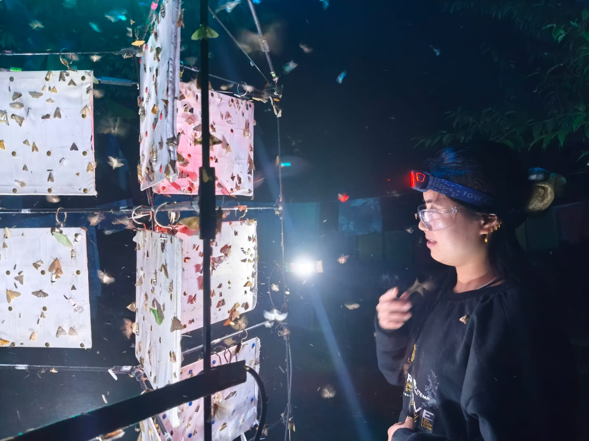
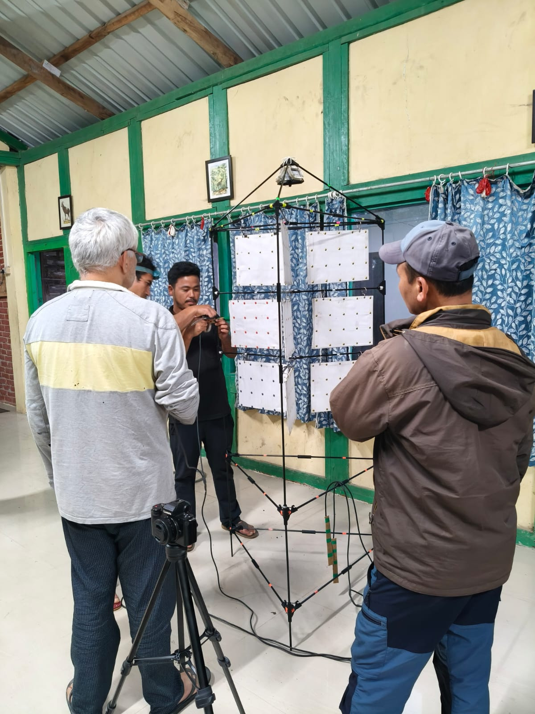
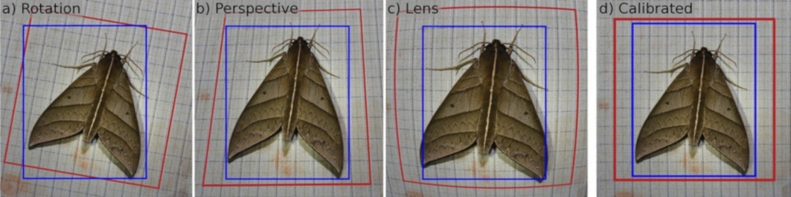
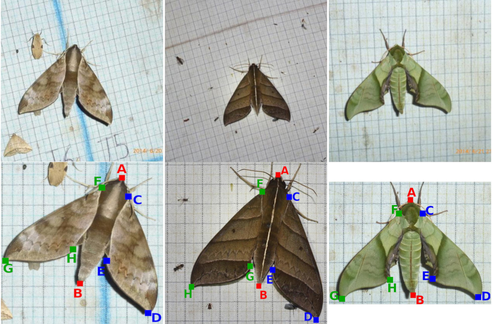
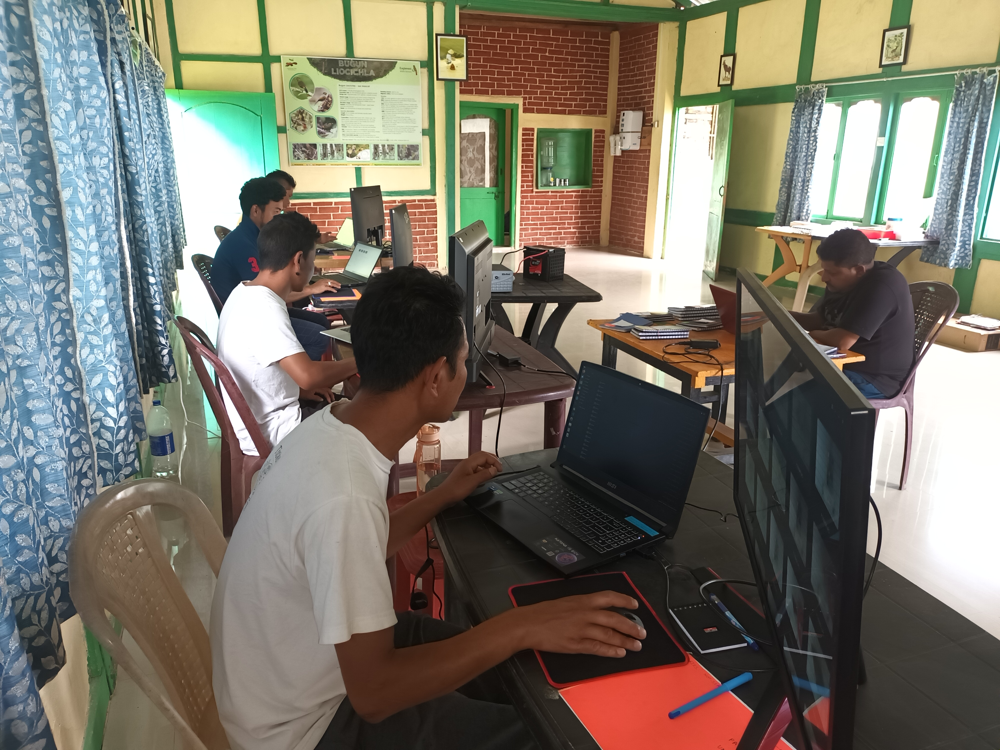
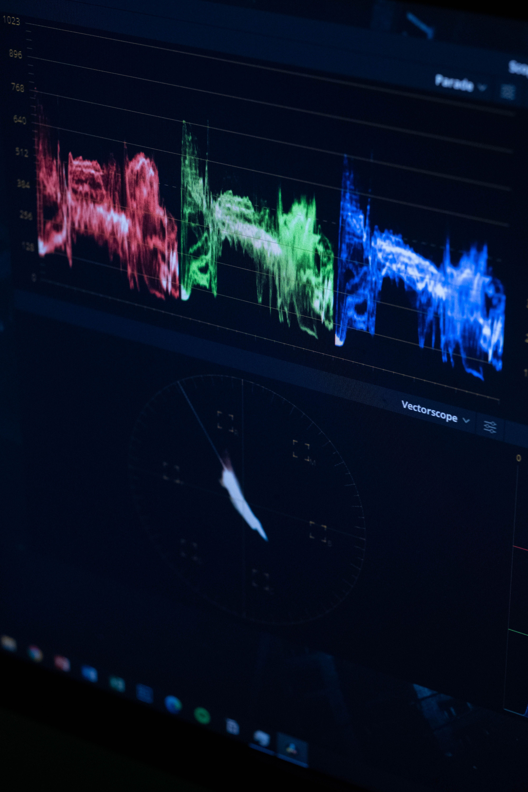

Field ecology
Himalayan moth communities
Studying how moth diversity changes across elevation, habitat, seasonality and environmental gradients.
Research at MOTH Lab
Our research connects moth diversity, ecological traits, colour, movement, weather radar and artificial intelligence to understand how insects live, move and respond to environmental change.
Explore research areas →Our questions
We ask how insects are shaped by mountains, forests, climate, predators, atmosphere and human-modified environments.



Research themes
MOTH Lab works across scales: from the colour and architecture of moth wings to the atmospheric movement of insects detected by weather radar.
We document moth communities across Himalayan landscapes to understand species diversity, ecological turnover and responses to environmental gradients.
We measure morphology, colour, wing architecture and pattern to study how insect form reflects ecological function and evolutionary pressure.
We repurpose weather radar to detect nocturnal emergence, aerial insect abundance and biological movement through the lower atmosphere.
We develop image-processing and machine-learning workflows for scalable, repeatable and visually rich biodiversity monitoring.
Moth screen in action
In the tropical evergreen forests of the eastern Himalayas, the night changes as soon as the lights are switched on. Moths, beetles and countless other insects arrive from the dark, revealing a hidden world of movement, colour and diversity.
These field nights form the foundation of our work: documenting biodiversity, measuring traits and building long-term records of insects in rapidly changing landscapes.
Radar ecology
We may not notice the nightly emergence and take-off of insects, but weather radar can detect their movement as biological signatures in the atmosphere.
Around dusk, the radar begins to pick up bursts of reflectivity as insects rise into the air. In this animation, notice the sudden increase in reflectivity signatures around 6:34 PM — a hidden ecological event becoming visible through remote sensing.
Current directions
Our research programme is built around a simple idea: insects are everywhere, but they are rarely monitored at the scales needed to understand ecological change.
By combining field surveys, imaging, radar archives, environmental data and computational tools, we aim to make hidden biodiversity more visible, measurable and actionable.
Studying how moth diversity changes across elevation, habitat, seasonality and environmental gradients.

Measuring wing shape, morphology, colour and pattern to understand how phenotypes respond to ecological pressures.

Using weather radar to detect insect emergence, abundance and movement through the atmosphere.

Building workflows for image processing, feature extraction and scalable ecological observation.
Capacity building
A central part of MOTH Lab’s work is built with members of the local Bugun community in and around Eaglenest Wildlife Sanctuary. Much of our fieldwork is carried out by local collaborators who know these forests intimately and bring exceptional natural-history knowledge to the project.
Many of our field collaborators are already outstanding birders and forest observers. Through MOTH Lab, they are now also trained in moth monitoring, specimen documentation, basic computing, image organisation and data sorting.
This is especially important because a single night of moth sampling can generate hundreds to thousands of images. Building local capacity for managing, sorting and organising these data helps create a more sustainable, community- anchored model for long-term biodiversity monitoring.

Research visuals
A visual archive of the places, organisms, instruments and data streams that shape the research at MOTH Lab.



Work with us
MOTH Lab welcomes students, collaborators and partners interested in insects, ecology, remote sensing, AI, biodiversity monitoring and the hidden movement of life through the atmosphere.
Get in touch →Publications
Automatically updated from my public ORCID record.
Loading publications...